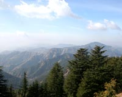

Accommodations
Facilities
Room Tarif
Special Packages



Summer Temperature: Maximum: 270C, Minimum: 140C
Winter Temperature: Maximum: 160C, Minimum: 00C
Best Time to Visit: April to July (summer) and December/ January (if you want to enjoy snowfall)
Shimla in Himachal Pradesh is one of the most frequented hill resorts in India. Snuggled amidst the lap of nature's bounty, the place exudes a charm that hypnotizes tourists from all corners of the globe. From honeymooners to backpackers; the place remains flooded with tourist traffic across the seasons. The bucolic beauty of the landscape contradictorily juxtaposed with its urban pace makes Shimla a unique dream destination for people from the hoary plains below. This article provides all the requisite information on the weather and climate of Shimla and helps you to have an idea of its climatic conditions.
Summer
The summer season lasts from the month of April to June. During this period, the place allures people from the hot plains and hence remains packed with tourists. The temperature is very pleasant and remains ideal for gallivanting around the place. Days are warm and bracing with maximum temperature reaching not more than 270C. Nights can get a bit chillier with temperature dropping down to 140C. Mild drizzles are also experienced during this season.
Winter
Winters in Shimla last from the month of November to mid- February. The place is lashed by cold winds that blow from the higher ranges of the Himalayas. The maximum temperature during the day is around 160C. During the night, the temperature is further lowered to around 00C. The place also experiences snowfall during the Christmas time and lures tourists in large numbers. Though communication and accommodation problems surface up due to heavy snowfall; the place nevertheless attracts a large number of tourists with its snow charm.
Monsoon
The monsoon season in Shimla lasts for three months - July, August and September. Incessant and heavy downpour touches the vegetation of Shimla with a new resplendence. The seasonal waterfalls also gush with a renewed vigor. But, the place is better not visited during this season. It gets prone to accidental landslides and the hill station virtually shuts down for tourists. The temperature also falls down considerably and fluctuates between 150C to 240C. The beat season to visit Shimla is either during the summers or in the month of December/ January when the place gets cloaked in white with snowfall.